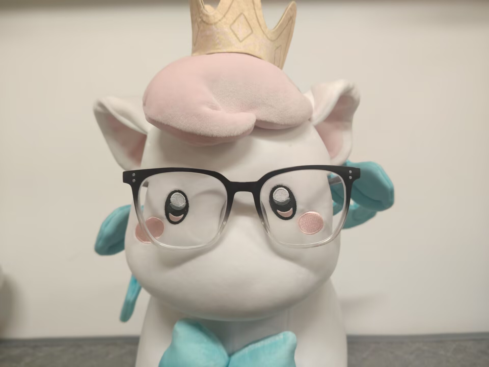

01 / MINI PROGRAM
古韵闽风
福建非遗主题微信小程序，提供非遗信息浏览、地图查询、路线规划、打卡收藏，以及基于浏览与偏好的推荐。
微信小程序Spring BootMyBatis-PlusMySQLRedisJWTECharts
查看源码AI 全栈开发工程师 · 2027 届在校生
专注于 Java 后端、AI 应用与全栈开发，关注将目标检测、实时通信和 LLM 能力落地为完整、可用的产品体验。

从业务系统到 AI 识别服务，持续练习完整的工程化交付。
福建非遗主题微信小程序，提供非遗信息浏览、地图查询、路线规划、打卡收藏，以及基于浏览与偏好的推荐。
面向 RTSP 摄像头的施工现场安全监控平台，集成安全帽目标检测、人脸识别、HLS 视频流播放、事件管理与数据可视化。
校园无烟行为监测平台，支持图片与视频流识别、实时预警、统计可视化，并通过 GLM-4-Flash 生成事件分析与处置建议。
基于 RuoYi 二次开发的教学管理后端，面向学生、教师和管理员提供接口，包含智能阅卷、错题集、知识点树、权限控制与定时任务。
基于 RuoYi 的 SaaS 桌面点餐管理平台，包含点餐业务模块、后台权限与系统管理、Vue 管理端、定时任务，并集成支付宝支付 SDK。
以业务实现为中心，持续积累跨语言协同和 AI 集成经验。
自学能力强，热爱编程；具备良好的团队协作与沟通能力，能够快速融入开发团队。面对新技术和复杂问题，保持好奇心、执行力与持续学习的习惯。
欢迎交流项目实践、AI 应用与开发经验。